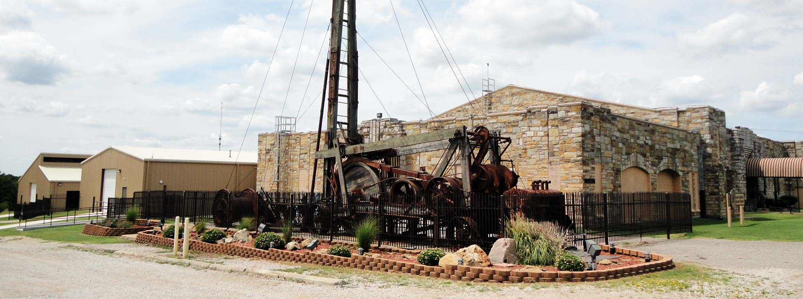
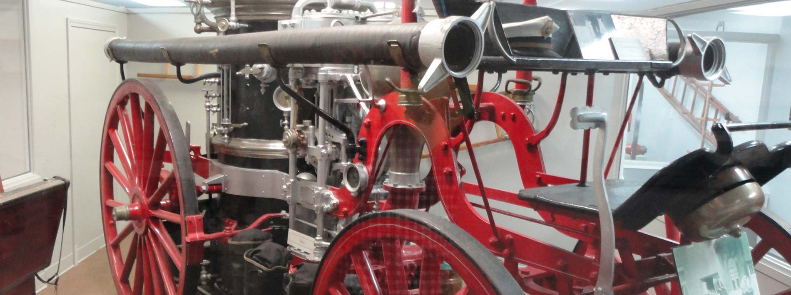
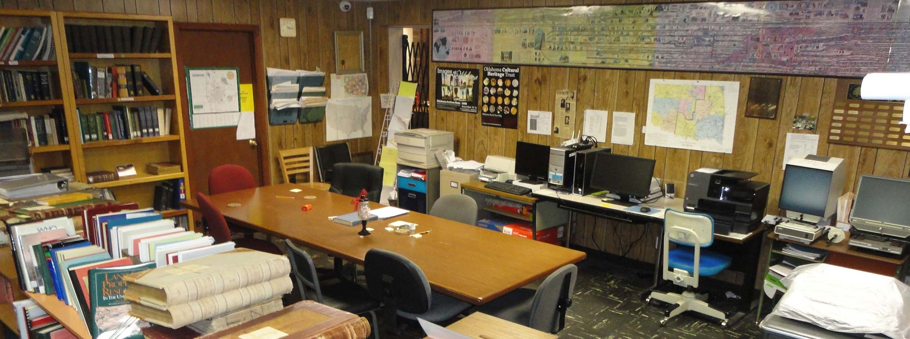
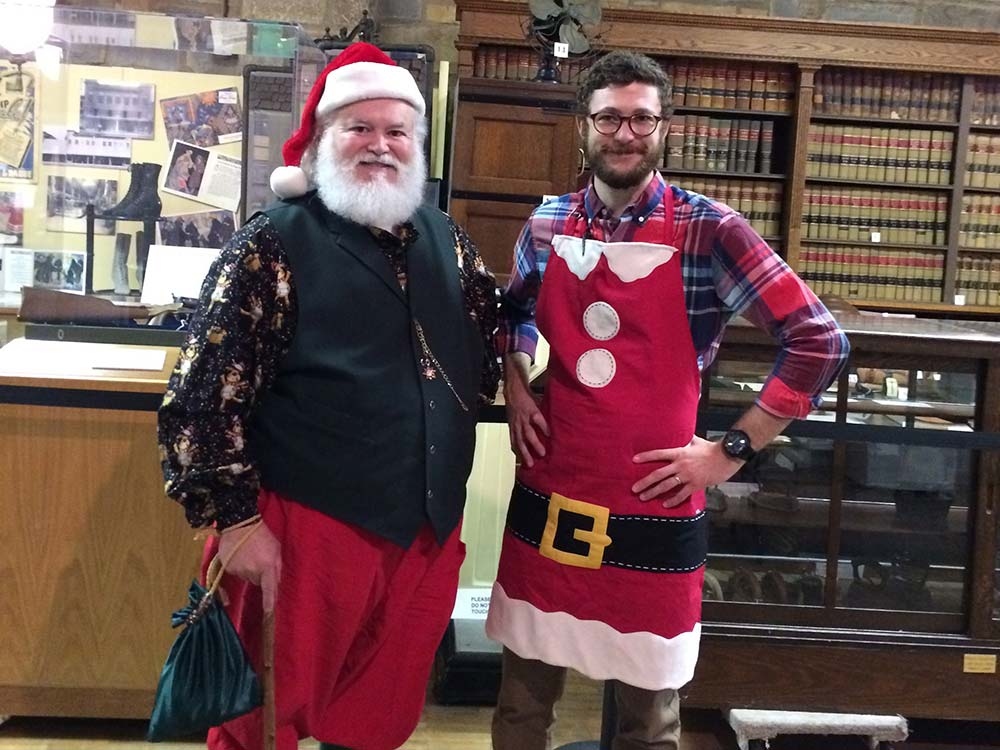
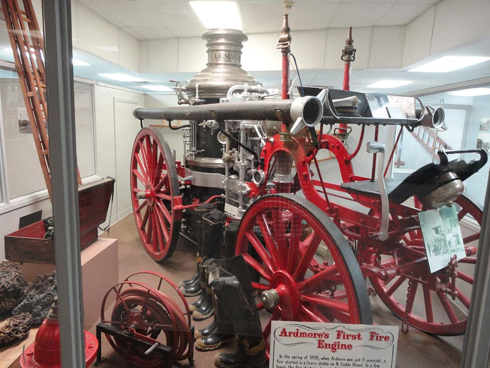

Strong roots · South Central Oklahoma
Deep roots. Living history.
Step into the stories of South Central Oklahoma—and discover a little of your own.
Our historic home · The 1935–1936 armoryDiscover what’s inside ↓
Come on inAdmission is free
Make time for historyTuesday–Saturday, 10–5
Find us in Ardmore35 Sunset Drive SW ↗
Our historic armory
A landmark home for South Central Oklahoma’s stories.
Tools of Our Land
Discover the region’s farming and ranching heritage.

Ardmore’s first fire engine
A closer look at the objects that shaped everyday life.

Honoring those who served
Personal stories and artifacts in the museum’s west wing.
A place for curious minds
The past feels
closer here.
Behind these limestone walls are the objects, memories and people that shaped our home. Take your time. There’s a story around every corner.

Strong roots, South Central Oklahoma
A landmark with a purpose
History worth
holding on to.
To collect, preserve and interpret the social, cultural and economic history of South Central Oklahoma with a special emphasis on Ardmore and Carter County.
Get to know the museumLearning, together
Make a little history.

For ages 3–7 · December
Santa’s House on the Prairie
Ornaments, stories and a little holiday wonder.
Discover Santa’s House
For grades 3–8
Small clues. Big discoveries.
A museum scavenger hunt for curious young minds.
Explore the scavenger huntKeep the stories going
A museum belongs
to its community.
Become a member, support an educational program, or gather here for your next event. There’s more than one way to be part of the story.
Greater Southwest Historical Museum
Our Mission
To collect, preserve and interpret the social, cultural and economic history of South Central Oklahoma with a special emphasis on Ardmore and Carter County.